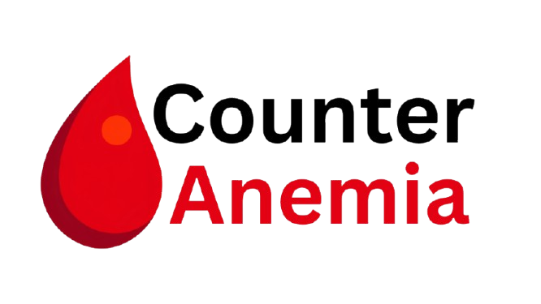

1. Apakah Anda sering merasa cepat lelah, letih, atau lemas saat menjalani aktivitas sehari-hari tanpa alasan yang jelas?
2. Apakah Anda sering mengalami pusing atau mata berkunang-kunang, terutama saat berdiri mendadak dari posisi duduk atau berbaring?
3. Apakah bagian dalam kelopak mata bawah, kuku, atau bibir Anda terlihat pucat?